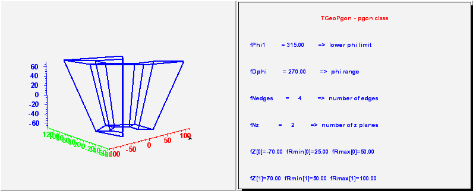
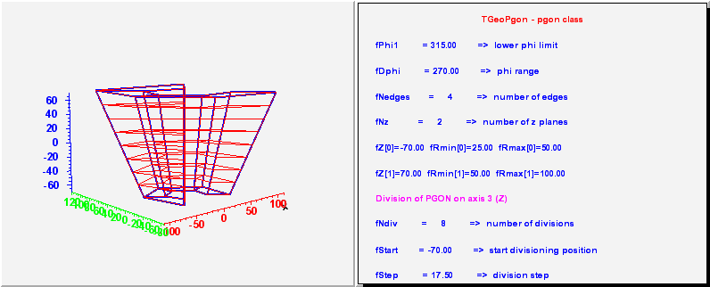

class TGeoPgon: public TGeoPcon
TGeoPgon - a polygone. It has at least 10 parameters : - the lower phi limit; - the range in phi; - the number of equal edges on each z plane; - the number of z planes (at least two) where the inner/outer radii are changing; - z coordinate, inner and outer radius of the inscribed cercle (distance from center to edges) for each z plane/*  */
/*  */
Function Members (Methods)
public:
protected:
Data Members
public:
| enum TGeoShape::EShapeType { | kBitMask32 | |
| kGeoNoShape | ||
| kGeoBad | ||
| kGeoRSeg | ||
| kGeoPhiSeg | ||
| kGeoThetaSeg | ||
| kGeoVisX | ||
| kGeoVisY | ||
| kGeoVisZ | ||
| kGeoRunTimeShape | ||
| kGeoInvalidShape | ||
| kGeoTorus | ||
| kGeoBox | ||
| kGeoPara | ||
| kGeoSph | ||
| kGeoTube | ||
| kGeoTubeSeg | ||
| kGeoCone | ||
| kGeoConeSeg | ||
| kGeoPcon | ||
| kGeoPgon | ||
| kGeoArb8 | ||
| kGeoEltu | ||
| kGeoTrap | ||
| kGeoCtub | ||
| kGeoTrd1 | ||
| kGeoTrd2 | ||
| kGeoComb | ||
| kGeoClosedShape | ||
| kGeoXtru | ||
| kGeoParaboloid | ||
| kGeoHalfSpace | ||
| kGeoHype | ||
| kGeoSavePrimitive | ||
| }; | ||
| enum TObject::EStatusBits { | kCanDelete | |
| kMustCleanup | ||
| kObjInCanvas | ||
| kIsReferenced | ||
| kHasUUID | ||
| kCannotPick | ||
| kNoContextMenu | ||
| kInvalidObject | ||
| }; | ||
| enum TObject::[unnamed] { | kIsOnHeap | |
| kNotDeleted | ||
| kZombie | ||
| kBitMask | ||
| kSingleKey | ||
| kOverwrite | ||
| kWriteDelete | ||
| }; |
protected:
| Double_t | TGeoBBox::fDX | X half-length |
| Double_t | TGeoBBox::fDY | Y half-length |
| Double_t | TGeoBBox::fDZ | Z half-length |
| Double_t | TGeoPcon::fDphi | phi range |
| TString | TNamed::fName | object identifier |
| Int_t | fNedges | number of edges (at least one) |
| Int_t | TGeoPcon::fNz | number of z planes (at least two) |
| Double_t | TGeoBBox::fOrigin[3] | box origin |
| Double_t | TGeoPcon::fPhi1 | lower phi limit |
| Double_t* | TGeoPcon::fRmax | [fNz] pointer to array of outer radii |
| Double_t* | TGeoPcon::fRmin | [fNz] pointer to array of inner radii |
| UInt_t | TGeoShape::fShapeBits | shape bits |
| Int_t | TGeoShape::fShapeId | shape id |
| TString | TNamed::fTitle | object title |
| Double_t* | TGeoPcon::fZ | [fNz] pointer to array of Z planes positions |
Class Charts
{kind=link}
{kind=link}
{kind=link}
{kind=link}
Function documentation
TGeoPgon(Double_t* params)
Default constructor in GEANT3 style param[0] = phi1 param[1] = dphi param[2] = nedges param[3] = nz param[4] = z1 param[5] = Rmin1 param[6] = Rmax1
void ComputeBBox()
compute bounding box for a polygone Check if the sections are in increasing Z order
void ComputeNormal(Double_t* point, Double_t* dir, Double_t* norm)
Compute normal to closest surface from POINT.
Double_t DistFromInside(Double_t* point, Double_t* dir, Int_t iact = 1, Double_t step = TGeoShape::Big(), Double_t* safe = 0) const
compute distance from inside point to surface of the polygone first find out in which Z section the point is in
void LocatePhi(Double_t* point, Int_t& ipsec) const
Locates index IPSEC of the phi sector containing POINT.
Int_t GetPhiCrossList(Double_t* point, Double_t* dir, Int_t istart, Double_t* sphi, Int_t* iphi, Double_t stepmax = TGeoShape::Big()) const
Returns lists of PGON phi crossings for a ray starting from POINT.
Bool_t SliceCrossingInZ(Double_t* point, Double_t* dir, Int_t nphi, Int_t* iphi, Double_t* sphi, Double_t& snext, Double_t stepmax) const
Performs ray propagation between Z segments.
Bool_t SliceCrossingZ(Double_t* point, Double_t* dir, Int_t nphi, Int_t* iphi, Double_t* sphi, Double_t& snext, Double_t stepmax) const
Performs ray propagation between Z segments.
Bool_t SliceCrossingIn(Double_t* point, Double_t* dir, Int_t ipl, Int_t nphi, Int_t* iphi, Double_t* sphi, Double_t& snext, Double_t stepmax) const
Check boundary crossing inside phi slices. Return distance snext to first crossing if smaller than stepmax. Protection in case point is in phi gap or close to phi boundaries and exiting
Bool_t SliceCrossing(Double_t* point, Double_t* dir, Int_t nphi, Int_t* iphi, Double_t* sphi, Double_t& snext, Double_t stepmax) const
Check boundary crossing inside phi slices. Return distance snext to first crossing if smaller than stepmax.
Bool_t IsCrossingSlice(Double_t* point, Double_t* dir, Int_t iphi, Double_t sstart, Int_t& ipl, Double_t& snext, Double_t stepmax) const
Check crossing of a given pgon slice, from a starting point inside the slice
Double_t DistFromOutside(Double_t* point, Double_t* dir, Int_t iact = 1, Double_t step = TGeoShape::Big(), Double_t* safe = 0) const
Compute distance from outside point to surface of the polygone
Int_t DistancetoPrimitive(Int_t px, Int_t py)
compute closest distance from point px,py to each corner
TGeoVolume * Divide(TGeoVolume* voldiv, const char* divname, Int_t iaxis, Int_t ndiv, Double_t start, Double_t step)
--- Divide this polygone shape belonging to volume "voldiv" into ndiv volumes called divname, from start position with the given step. Returns pointer to created division cell volume in case of Z divisions. Phi divisions are allowed only if nedges%ndiv=0 and create polygone "segments" with nedges/ndiv edges. Z divisions can be performed if the divided range is in between two consecutive Z planes. In case a wrong division axis is supplied, returns pointer to volume that was divided.
void GetBoundingCylinder(Double_t* param) const
TBuffer3D * MakeBuffer3D() const
Creates a TBuffer3D describing *this* shape. Coordinates are in local reference frame.
Double_t Rproj(Double_t z, Double_t* point, Double_t* dir, Double_t cphi, Double_t sphi, Double_t& a, Double_t& b) const
Double_t SafetyToSegment(Double_t* point, Int_t ipl, Int_t iphi, Bool_t in, Double_t safphi, Double_t safmin = TGeoShape::Big()) const
Compute safety from POINT to segment between planes ipl, ipl+1 within safmin.
Double_t Safety(Double_t* point, Bool_t in = kTRUE) const
computes the closest distance from given point to this shape, according to option. The matching point on the shape is stored in spoint.
void SavePrimitive(ostream& out, Option_t* option = "")
Save a primitive as a C++ statement(s) on output stream "out".
void GetMeshNumbers(Int_t& nvert, Int_t& nsegs, Int_t& npols) const
Returns numbers of vertices, segments and polygons composing the shape mesh.
void Sizeof3D() const
fill size of this 3-D object
TVirtualGeoPainter *painter = gGeoManager->GetGeomPainter();
if (!painter) return;
Int_t n;
n = fNedges+1;
Int_t numPoints = fNz*2*n;
Int_t numSegs = 4*(fNz*n-1+(fDphi == 360));
Int_t numPolys = 2*(fNz*n-1+(fDphi == 360));
painter->AddSize3D(numPoints, numSegs, numPolys);
const TBuffer3D & GetBuffer3D(Int_t reqSections, Bool_t localFrame) const
Fills a static 3D buffer and returns a reference.
Bool_t GetPointsOnSegments(Int_t npoints, Double_t* array) const
{return TGeoBBox::GetPointsOnSegments(npoints,array);}